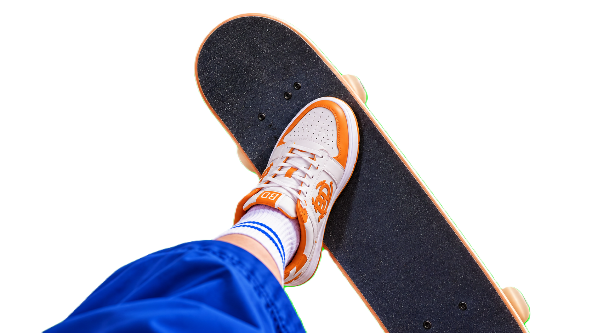
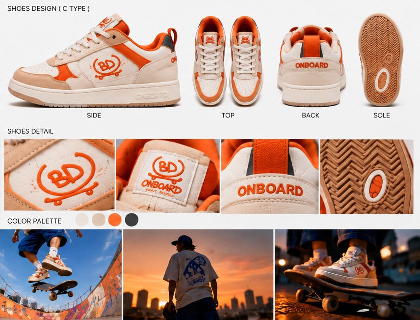
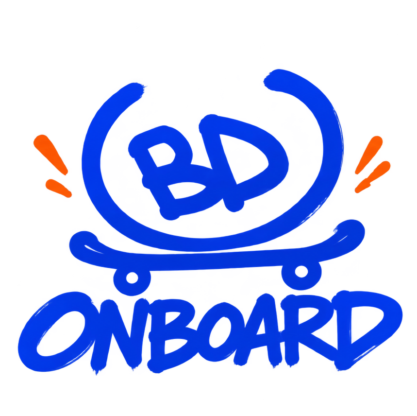
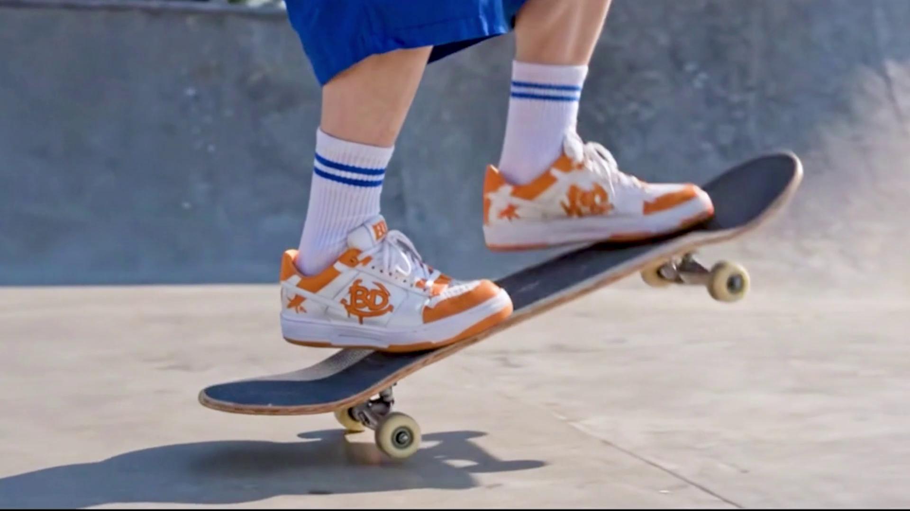
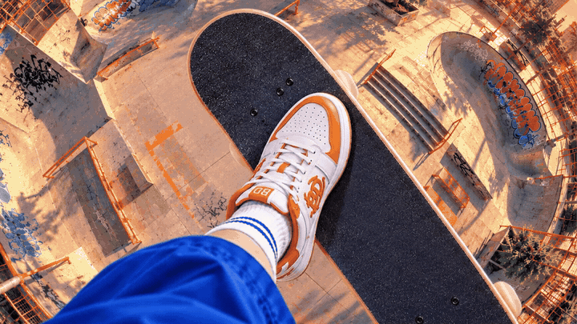
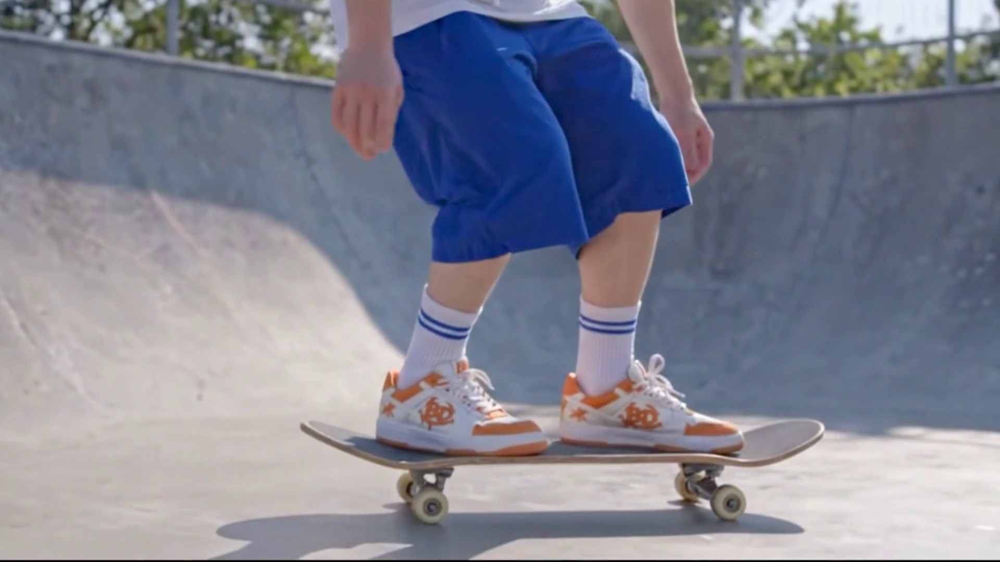

산책 중 동생이 추천한
광고 소재, 신발.
익숙한 움직임을,
특별한 장면으로 바꿀 수 있을까?
한 번의 점프,
여러 번의 시간.
평범한 신발 광고에서 시작된 생각.
하나의 움직임으로 시간과 공간을 바꿔보면 어떨까?
FROM INSPIRATION TO CONCEPT
IDEA COLLISION
서로 다른 생각들이, 하나의 장면으로.
TV에서 본 춤추는 발.
발을 중심으로 화면을 바꾼다면?
아시안게임에서 봤던
스케이트보드가 떠올랐다.
WAIT... WHAT IF?
신발을 중심으로,
세상을 움직여 보자!
세상을 움직여 보자!
MOTION DIRECTION
ONE JUMP / WORLD SHIFT
발은 느려지고,
세상은 바뀐다.
스케이트보드가 공중으로 떠오르는 순간, 발과 보드의 움직임은 느려진다. 하지만 그 주변의 세상은 계속 변화한다. 하나의 점프 안에 서로 다른 시간과 날씨를 담는 연출.

JUMP
SLOW MOTION
WORLD SHIFT
LANDING
VISUAL DEVELOPMENT
DESIGN CHAOS
광고 속 신발부터, 로고까지.
광고의 중심이 되는 보드화와 로고도 콘셉트에 맞춰 직접 기획하고, ChatGPT와 함께 시각적인 디자인으로 발전시켰다.

THE PRODUCT
SHOE DESIGN

THE IDENTITY
LOGO DESIGN
PROJECT
Hey! Just On Board!
TYPE
AI Skateboarding Shoe Commercial
Short-form Advertising Film
MY ROLE
Concept & Creative Direction
Storytelling & Motion Direction
AI Video Production
Video Editing & Post-production
COLLABORATION
AI-assisted Shoe & Logo Design
TOOLS
Google Flow
Suno
Adobe After Effects
ChatGPT
HEY! JUST ON BOARD!
나는 느려지지만, 세상은 더 빠르게.
한 번의 점프에 서로 다른 시간과 날씨를 담기까지.



점프는 한 번. 하지만 세상은 바뀐다.
점프한 발과 보드의 움직임은 느려지고, 그 사이 주변의 시간과 날씨는 계속 변화한다. 하나의 동작 안에 여러 장면을 연결하는 연출을 실험했다.
AI SCENE GENERATION
상상을 장면으로.
Google Flow를 활용해 스케이트보드와 신발의 움직임, 시간대와 날씨가 변화하는 장면을 제작했다.
EDITING & RHYTHM
15초 안의 속도감.
After Effects로 장면 전환과 타이밍을 조정하고, Suno로 제작한 음악과 영상의 리듬을 연결했다.
THE RESULT
ONE JUMP. MANY WORLDS.